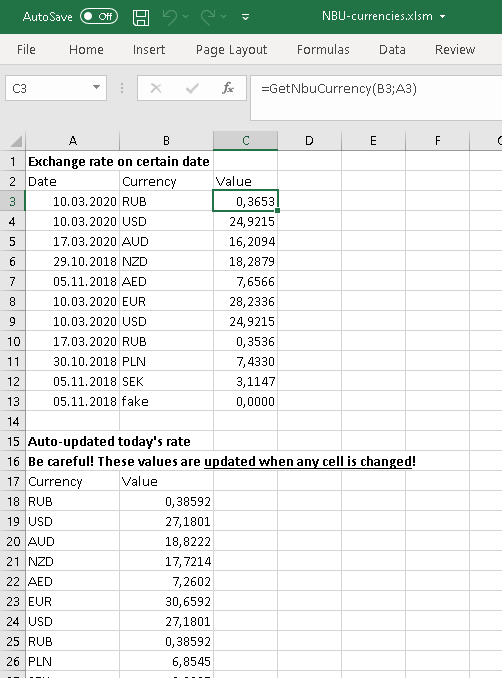

Currency rates from the National Bank of Ukraine website in VBA
Two Excel user-defined functions that load National Bank of Ukraine exchange rates for a given date or for today, with notes on when not to use them.
A reader of the previous article about loading Bank of Russia exchange rates asked about the same task for the National Bank of Ukraine (NBU). Here is a ready-made macro for it. The process is the same as the one described in detail in that article, so this one goes straight to the result.
The macro declares two user-defined functions (UDF) that can be used in worksheet formulas.
Rate on a given date
=GetNbuCurrency("RUB";"5/31/2020")Loads the rate of the chosen currency for the given date. The data comes from the official NBU API:
https://bank.gov.ua/NBU_Exchange/exchange?date=31.12.2019Rate for today
=NbuTodayCurrency(C10;NOW())Loads the rate for the current date. The value of the second argument can be anything. NOW is used only to force Excel to recalculate the value (and query the API) every time that argument changes: when the workbook is opened, and even when any cell in any open workbook changes.
Be careful with this function. If a workbook has many cells with such a formula, you risk flooding the NBU website with requests, which can get you banned. It is wiser to put the formula in a single place (for example on a separate sheet) and refer to that cell from the rest of your formulas.

Source code
The repository with the workbook, examples and source code: https://github.com/navferty/NBU-VBA-Currencies. If you find bugs or have ideas for improvement, issues are welcome.
Originally published in Russian on Pikabu.
Курсы валют с сайта НБУ на VBA
Две пользовательские функции Excel, которые загружают курсы валют НБУ на заданную дату или на сегодня, и о том, когда их лучше не использовать.
В комментариях к предыдущей статье про загрузку курсов валют с сайта ЦБ РФ спросили про аналогичную задачу для Национального банка Украины (НБУ). Вот готовый макрос для этого. Процесс такой же, как подробно описан в той статье, поэтому сразу перейдём к результату.
Макрос объявляет две пользовательские функции (UDF), которые можно использовать в формулах на листе Excel.
Курс на заданную дату
=GetNbuCurrency("RUB";"5/31/2020")Загружает курс выбранной валюты на заданную дату. Данные берутся из официального API НБУ:
https://bank.gov.ua/NBU_Exchange/exchange?date=31.12.2019Курс на сегодня
=NbuTodayCurrency(C10;NOW())Загружает курс валюты на текущую дату. Значение второго аргумента может быть любым. Функция NOW нужна только для того, чтобы принудительно пересчитывать значение (и запрашивать API) при каждом изменении этого аргумента: при открытии книги и даже при изменении любой ячейки в любой открытой книге Excel.
Будьте осторожны с этой функцией. Если в книге много ячеек с такой формулой, можно завалить сайт запросами, и это может закончиться баном. Разумнее разместить формулу в одном месте (например, на отдельном листе) и ссылаться на эту ячейку в остальных формулах.
Исходный код
Репозиторий с книгой, примерами и исходным кодом: https://github.com/navferty/NBU-VBA-Currencies. Если найдёте ошибки или будут идеи по доработке, пишите в issues.
Статья впервые опубликована на Пикабу.